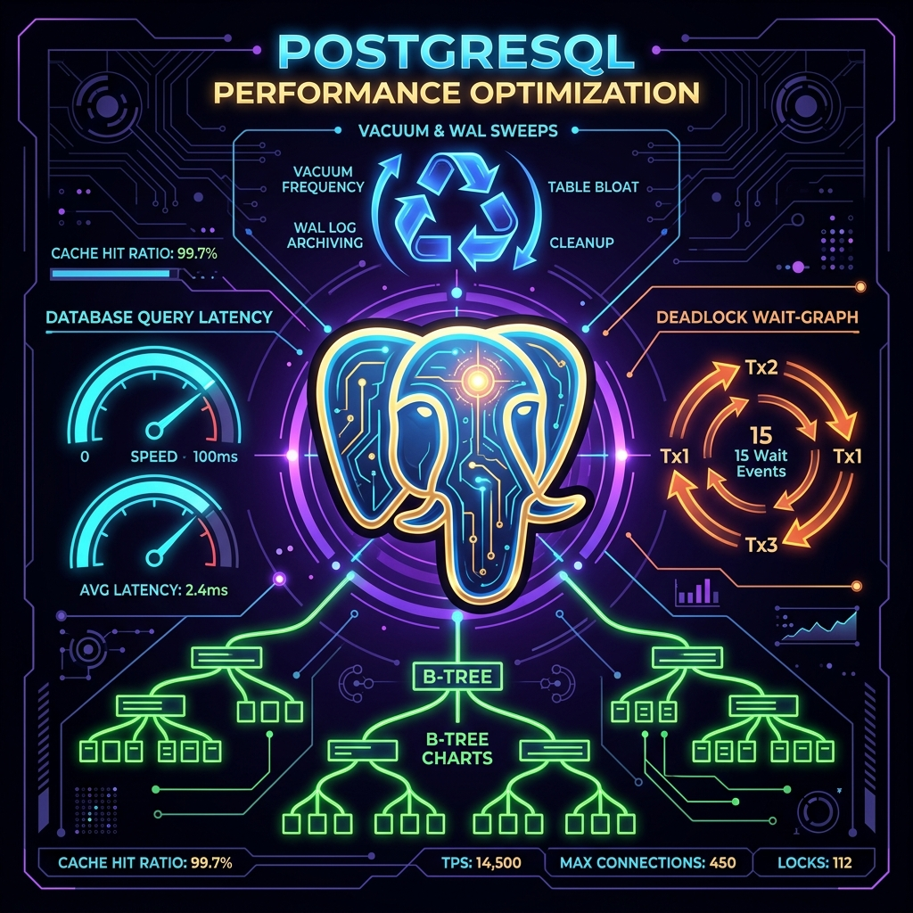
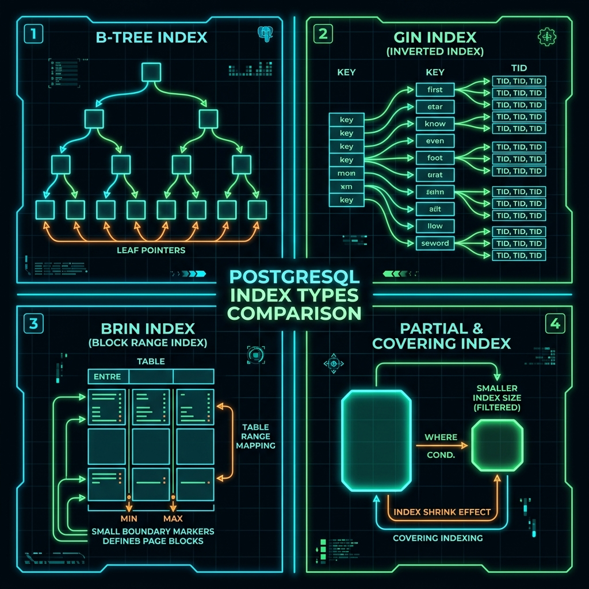
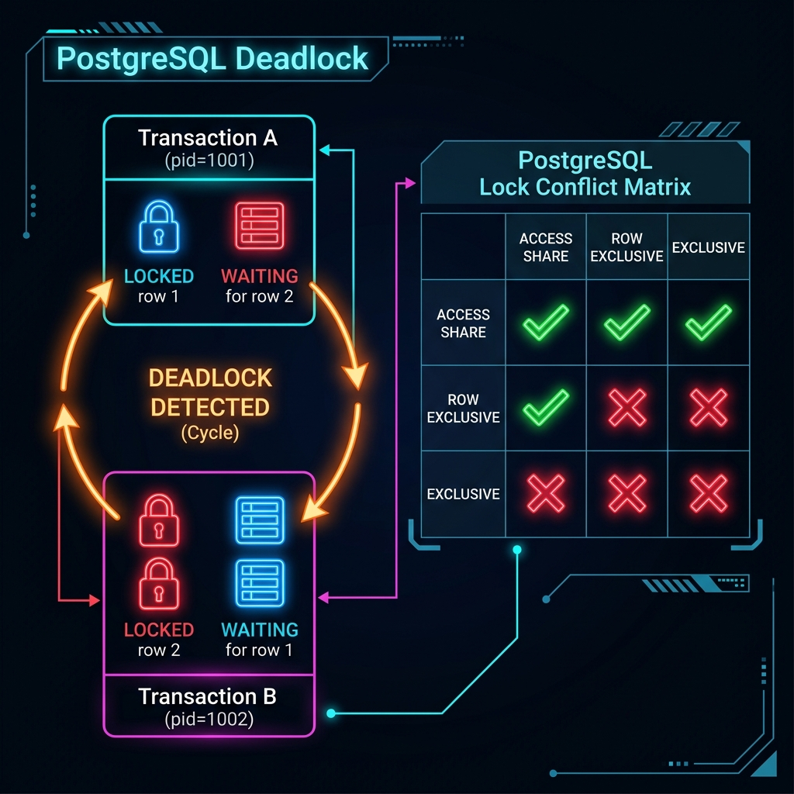
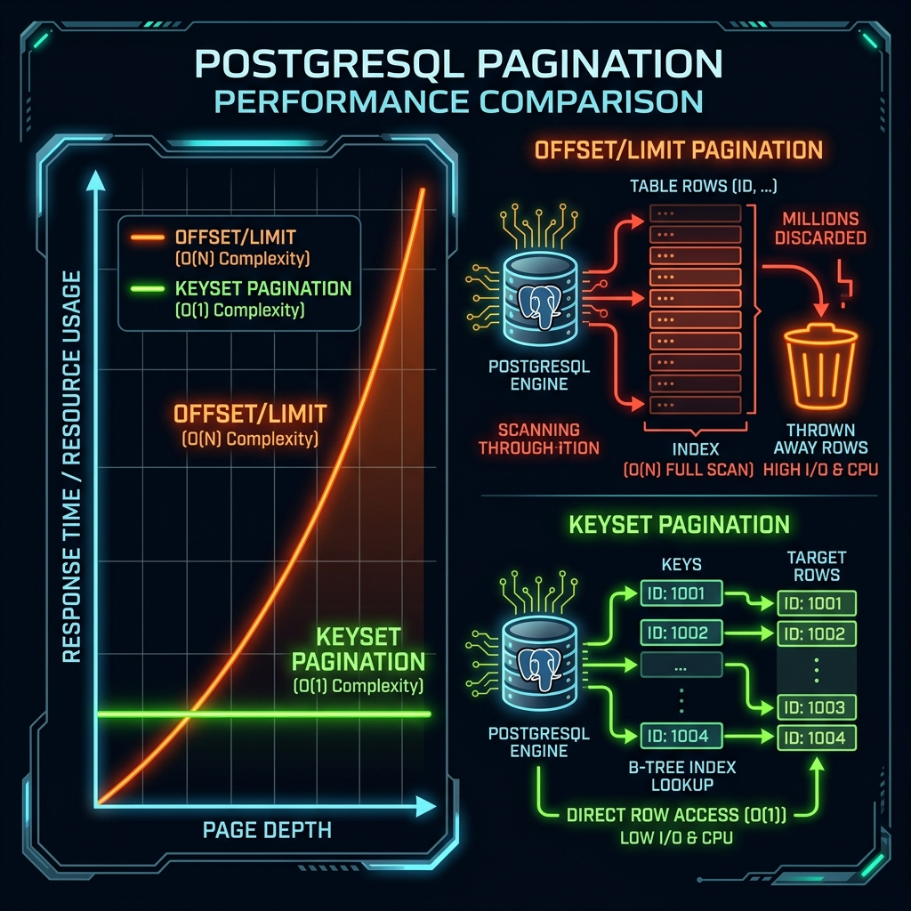
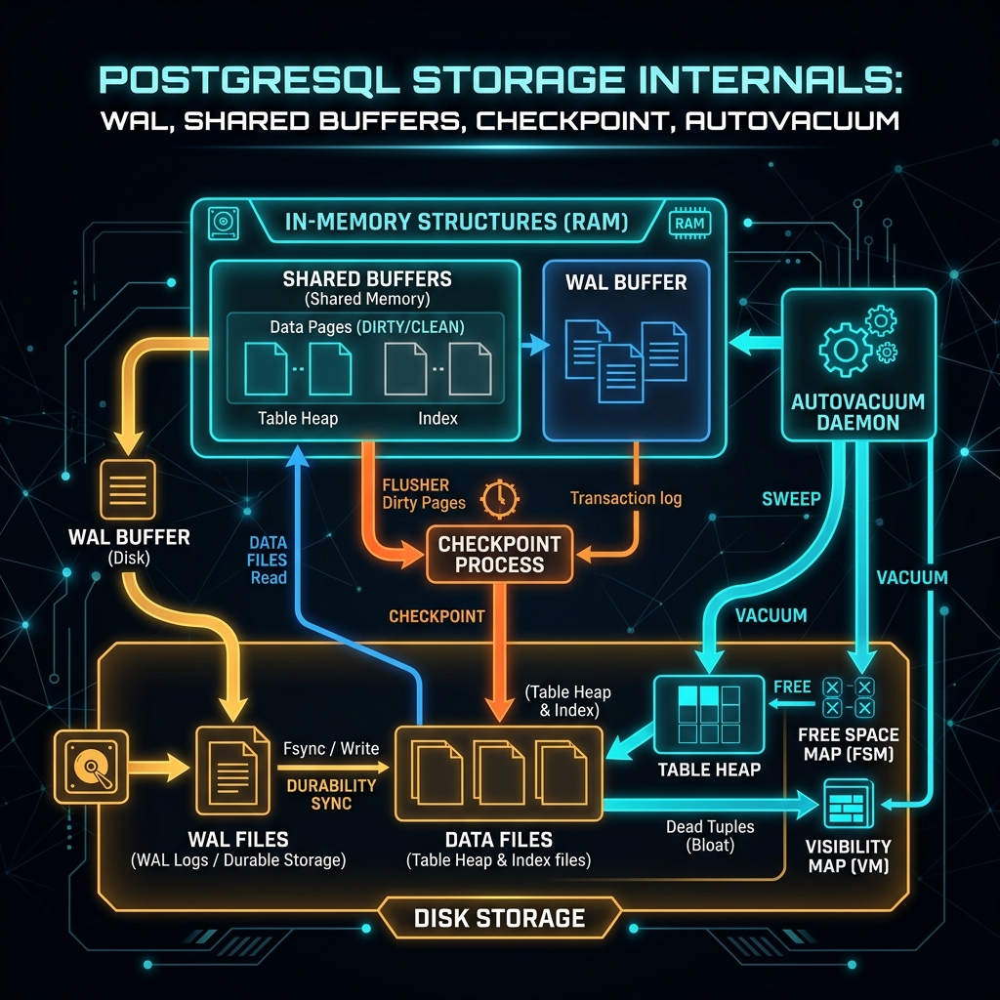

Tài liệu này dành cho PostgreSQL developer và DBA cần hiểu sâu về internals để tối ưu performance trong môi trường production. Mỗi chủ đề được trình bày theo cấu trúc: Problem Statement → Solution → Visual Diagram → Note & Conclusion.
Tất cả ví dụ đều dựa trên tình huống thực tế với PostgreSQL 14+. Code SQL đều có thể chạy trực tiếp.
B-Tree internals, GIN/GiST cho full-text, partial index, covering index, composite index ordering. EXPLAIN scan types.
Lock hierarchy, MVCC, wait graph, pg_locks monitoring, advisory locks, lock timeout strategies.
OFFSET/LIMIT problems, Keyset pagination, cursor-based, window function. Performance comparison trực tiếp.
EXPLAIN workflow, BUFFERS, FORMAT JSON, planner statistics, pg_stat_statements, slow query hunting.
Bloat monitoring, AUTOVACUUM tuning, WAL segments, checkpoint tuning, recovery point objective.
Mỗi ví dụ: Problem → Solution → Diagram → Note. Code SQL chạy được trên PostgreSQL 14+.
Index là cấu trúc dữ liệu phụ trợ giúp PostgreSQL tìm kiếm hàng trong bảng mà không cần quét toàn bộ (Sequential Scan). PostgreSQL hỗ trợ nhiều loại index: B-Tree (mặc định), Hash, GIN, GiST, SP-GiST, BRIN. Mỗi loại phù hợp với use case khác nhau.
Chi phí đánh đổi: Index tăng tốc READ nhưng làm chậm WRITE (phải cập nhật cả index khi INSERT/UPDATE/DELETE). Index chiếm thêm disk space. Cần phân tích query pattern trước khi tạo index.

| Loại Index | Phù hợp với | Operators | Không phù hợp |
|---|---|---|---|
B-Tree | Equality, range, sort | =, <, >, <=, >=, BETWEEN, LIKE 'abc%' | LIKE '%abc%', full-text |
Hash | Chỉ equality | = | Range, sort |
GIN | Array, JSONB, Full-text, tsvector | @>, <@, @@, && | Range, sort |
GiST | Geometry, ranges, full-text | &&, @>, <-> | Simple equality |
BRIN | Ordered large tables (time-series) | =, <, > | Random data, small tables |
Partial | Tập con có điều kiện | Phụ thuộc base type | Queries không match điều kiện |
Bạn có bảng orders (~10 triệu rows) với các query: (1) lọc theo status AND created_at, (2) lọc chỉ theo status. Đồng nghiệp tạo index (created_at, status) nhưng query vẫn chậm với pattern (2). Tại sao? Thứ tự cột trong composite index quan trọng thế nào?
Quy tắc "leftmost prefix": PostgreSQL có thể dùng composite index (A, B) cho query filter trên A, hoặc A+B, nhưng không thể dùng cho query chỉ filter trên B. Cột có selectivity cao (ít giá trị trùng) nên đặt trước.
-- Setup: Bảng orders 10M rows CREATE TABLE orders ( id BIGINT PRIMARY KEY, user_id BIGINT NOT NULL, status VARCHAR(20) NOT NULL, -- low cardinality: pending/processing/completed/cancelled amount NUMERIC(12,2), created_at TIMESTAMPTZ NOT NULL, region_id INTEGER ); -- ❌ SAI: cột created_at đứng đầu — range query on first col traps B-Tree CREATE INDEX idx_wrong ON orders (created_at, status); -- Query chỉ filter status → full index scan vì không dùng được leftmost prefix EXPLAIN ANALYZE SELECT * FROM orders WHERE status = 'pending'; -- → Seq Scan on orders (cost=0.00..285432.00 rows=50000 width=...) -- "Filter: (status = 'pending')" ← index không được dùng! -- ✅ ĐÚNG: status đứng đầu (equality), sau đó created_at (range) DROP INDEX idx_wrong; CREATE INDEX idx_orders_status_created ON orders (status, created_at DESC) INCLUDE (user_id, amount); -- covering index: không cần quay lại heap -- Verify: cả 3 query patterns đều dùng index EXPLAIN (ANALYZE, BUFFERS) SELECT * FROM orders WHERE status = 'pending' AND created_at >= NOW() - INTERVAL '7 days' ORDER BY created_at DESC LIMIT 100; -- → Index Scan using idx_orders_status_created on orders -- Index Cond: ((status = 'pending') AND (created_at >= ...)) -- Buffers: shared hit=8 ← chỉ đọc 8 pages thay vì 285432! -- Pattern 2: chỉ filter status → vẫn dùng index (leftmost prefix) EXPLAIN ANALYZE SELECT COUNT(*) FROM orders WHERE status = 'completed'; -- → Index Only Scan using idx_orders_status_created -- Heap Fetches: 0 ← zero heap access nhờ INCLUDE columns -- Kiểm tra index usage statistics SELECT indexrelname, idx_scan, -- số lần index được dùng idx_tup_read, -- số tuples đọc qua index idx_tup_fetch -- số tuples fetch từ heap FROM pg_stat_user_indexes WHERE relname = 'orders' ORDER BY idx_scan DESC;
Quy tắc thứ tự cột: (1) Equality columns trước, (2) Range/sort column sau. (3) Cột cardinality cao (unique-ish) lên đầu nếu selectivity tốt hơn. INCLUDE tạo covering index — query chỉ đọc index, không cần heap fetch → Index Only Scan nhanh nhất có thể.
Bảng orders có 10M rows nhưng 95% là status = 'completed'. Application chủ yếu query status IN ('pending', 'processing') — chỉ ~500K rows. Index toàn bộ bảng lãng phí disk và làm chậm VACUUM. Làm thế nào?
-- ✅ Partial index: chỉ index active orders (5% của bảng) CREATE INDEX idx_active_orders ON orders (created_at, user_id) WHERE status IN ('pending', 'processing'); -- Index size: ~40MB thay vì 800MB (full index) -- Maintenance overhead: chỉ update khi pending/processing orders thay đổi -- Query phải match WHERE clause của partial index EXPLAIN ANALYZE SELECT id, user_id, amount FROM orders WHERE status = 'pending' -- ✅ matches partial index condition AND created_at > NOW() - INTERVAL '1 day' ORDER BY created_at; -- → Index Scan using idx_active_orders -- Index size used: 40MB vs 800MB saved -- ❌ Query này KHÔNG dùng được partial index (missing WHERE clause) SELECT * FROM orders WHERE status = 'completed'; -- → Seq Scan (completed không nằm trong partial index) -- Pattern thực tế: partial index cho soft-delete CREATE INDEX idx_users_active ON users (email) WHERE deleted_at IS NULL; -- → Login query luôn dùng index này; deleted users không chiếm index space -- Pattern: partial unique index (email unique chỉ cho active users) CREATE UNIQUE INDEX idx_users_unique_active_email ON users (email) WHERE deleted_at IS NULL; -- Cho phép duplicate email cho deleted users, unique chỉ trong active -- So sánh kích thước: SELECT indexrelname, pg_size_pretty(pg_relation_size(indexrelid)) AS index_size FROM pg_stat_user_indexes WHERE relname = 'orders';
Khi dùng Partial Index: (1) Dữ liệu có phân phối không đều, (2) Query thường xuyên chỉ cần tập con nhỏ, (3) Soft-delete pattern. Lưu ý: Query WHERE clause phải bao gồm condition của partial index để PostgreSQL sử dụng được. Partial index có thể nhỏ hơn 95% so với full index trong trường hợp này.
Bảng products có cột metadata JSONB chứa attributes động (tags, specs, categories...) và cột description TEXT cần full-text search. Cả hai đều cần indexing hiệu quả mà B-Tree không hỗ trợ được.
CREATE TABLE products ( id BIGSERIAL PRIMARY KEY, name TEXT NOT NULL, description TEXT, metadata JSONB, price NUMERIC(10,2), ts_vector TSVECTOR -- generated column cho FTS ); -- GIN index cho JSONB: hỗ trợ @>, <@, ?, ?|, ?& CREATE INDEX idx_products_metadata_gin ON products USING gin (metadata); -- GIN index với jsonb_path_ops: nhỏ hơn default nhưng chỉ hỗ trợ @> CREATE INDEX idx_products_metadata_path ON products USING gin (metadata jsonb_path_ops); -- Full-Text Search: tạo tsvector column (generated) ALTER TABLE products ADD COLUMN ts_search TSVECTOR GENERATED ALWAYS AS ( to_tsvector('english', COALESCE(name, '') || ' ' || COALESCE(description, '') || ' ' || COALESCE(metadata->>'tags', '') ) ) STORED; CREATE INDEX idx_products_fts ON products USING gin (ts_search); -- Query 1: JSONB containment — tìm products có tag 'laptop' EXPLAIN ANALYZE SELECT id, name, price FROM products WHERE metadata @> '{"category": "electronics", "tags": ["laptop"]}'; -- → Bitmap Index Scan on idx_products_metadata_gin -- Recheck Cond: (metadata @> '{"category": "electronics"...}') -- Rows Removed by Recheck: 2 -- Query 2: JSONB key existence SELECT * FROM products WHERE metadata ? 'discount_price'; -- Query 3: Full-text search với ranking SELECT id, name, ts_rank(ts_search, query) AS rank FROM products, to_tsquery('english', 'laptop & gaming & !refurbished') query WHERE ts_search @@ query ORDER BY rank DESC LIMIT 20; -- → Bitmap Index Scan on idx_products_fts -- uses GIN index, results ranked by relevance -- Query 4: Kết hợp JSONB + FTS + range trong 1 query SELECT p.id, p.name, p.price, ts_rank(p.ts_search, q.query) AS relevance FROM products p, to_tsquery('english', 'wireless & keyboard') q WHERE p.ts_search @@ q.query AND p.metadata @> '{"in_stock": true}' AND p.price BETWEEN 50 AND 500 ORDER BY relevance DESC, p.price LIMIT 50; -- PostgreSQL sẽ dùng Bitmap AND của nhiều indexes → hiệu quả -- Gin index tuning: tăng gin_pending_list_limit cho write-heavy workload ALTER INDEX idx_products_metadata_gin SET (fastupdate = on, gin_pending_list_limit = 4096);
GIN vs B-Tree: GIN index lớn hơn B-Tree (~3-5x) nhưng cần thiết cho JSONB/Array/FTS. Dùng jsonb_path_ops operator class giảm kích thước GIN ~50% nếu chỉ cần @>. Generated column TSVECTOR tự động cập nhật và cho Index Only Scan. Fastupdate=on cải thiện write performance bằng cách batch GIN updates.
Bảng sensor_readings append-only, có 5 tỷ rows, tăng 10M rows/ngày. Cần index trên recorded_at để query range theo time. B-Tree index sẽ chiếm ~100GB disk. BRIN là giải pháp?
CREATE TABLE sensor_readings ( id BIGINT GENERATED ALWAYS AS IDENTITY, sensor_id INTEGER NOT NULL, recorded_at TIMESTAMPTZ NOT NULL, value DOUBLE PRECISION, unit VARCHAR(10) ) PARTITION BY RANGE (recorded_at); -- table partitioning theo tháng -- Tạo partitions theo tháng CREATE TABLE sensor_readings_2024_01 PARTITION OF sensor_readings FOR VALUES FROM ('2024-01-01') TO ('2024-02-01'); -- BRIN index: chỉ 1-2MB thay vì 100GB B-Tree! -- pages_per_range=32 = mỗi BRIN entry đại diện 32 heap pages (~256KB data) CREATE INDEX idx_sensor_readings_brin ON sensor_readings USING brin (recorded_at) WITH (pages_per_range = 32); -- BRIN hoạt động: lưu min/max value của recorded_at trong mỗi page range -- Query sẽ skip toàn bộ page ranges không overlap với time window EXPLAIN (ANALYZE, BUFFERS) SELECT AVG(value), MAX(value) FROM sensor_readings WHERE recorded_at BETWEEN '2024-01-15 00:00:00' AND '2024-01-15 23:59:59' AND sensor_id = 42; -- → Bitmap Index Scan on idx_sensor_readings_brin -- Recheck Cond: recorded_at BETWEEN ... -- Rows Removed by Index Recheck: 1234 (BRIN approximates → recheck needed) -- Buffers: shared hit=892 (vs 50M blocks full scan) -- BRIN phù hợp khi: data có correlation cao với thứ tự ghi (natural ordering) -- Kiểm tra correlation: SELECT attname, correlation -- 1.0 = perfect order, 0 = random FROM pg_stats WHERE tablename = 'sensor_readings' AND attname = 'recorded_at'; -- Nếu correlation > 0.9 → BRIN rất hiệu quả -- Nếu correlation < 0.5 → dùng B-Tree hoặc partition trước -- Kích thước so sánh thực tế: SELECT indexrelname, pg_size_pretty(pg_relation_size(indexrelid)) AS size, idx_scan, idx_blks_read FROM pg_stat_user_indexes WHERE relname = 'sensor_readings';
BRIN là lựa chọn tốt khi: Bảng rất lớn (hàng tỷ rows), data được insert theo thứ tự tự nhiên (correlation cao), chỉ cần range query trên cột đó. BRIN index có thể nhỏ hơn B-Tree 10,000 lần. Kết hợp BRIN với Table Partitioning cho time-series workload là best practice trong production.
MVCC (Multi-Version Concurrency Control): PostgreSQL không lock rows khi đọc — mỗi transaction thấy một snapshot nhất quán. Writers tạo new row version (tuple), readers đọc phiên bản cũ. Điều này giúp readers không block writers và ngược lại.
Deadlock xảy ra khi Transaction A giữ lock X và chờ lock Y, trong khi Transaction B giữ lock Y và chờ lock X. PostgreSQL phát hiện deadlock sau deadlock_timeout (default 1s) và abort transaction bị phát hiện sau cùng.

Application báo lỗi ERROR: deadlock detected nhưng không biết transaction nào gây ra. Cần toolset để phát hiện, chẩn đoán và monitor deadlock trong production mà không downtime.
-- 1. Bật logging deadlock chi tiết trong postgresql.conf: -- log_lock_waits = on -- deadlock_timeout = 1s -- log_min_duration_statement = 1000 (log queries > 1s) -- 2. Real-time: Query tất cả locks hiện tại SELECT pg_stat_activity.pid, pg_stat_activity.query, pg_stat_activity.state, pg_stat_activity.wait_event_type, pg_stat_activity.wait_event, pg_locks.mode, pg_locks.granted, age(pg_stat_activity.query_start) AS query_duration FROM pg_stat_activity JOIN pg_locks ON pg_stat_activity.pid = pg_locks.pid WHERE pg_stat_activity.state != 'idle' AND pg_locks.granted = false -- chỉ transactions đang bị block ORDER BY query_duration DESC; -- 3. Full lock wait graph: ai đang block ai WITH lock_info AS ( SELECT blocked.pid AS blocked_pid, blocked_a.query AS blocked_query, blocking.pid AS blocking_pid, blocking_a.query AS blocking_query, blocked.relation::regclass AS locked_table, blocked.mode AS blocked_wants_mode, blocking.mode AS blocking_holds_mode FROM pg_catalog.pg_locks blocked JOIN pg_catalog.pg_stat_activity blocked_a ON blocked_a.pid = blocked.pid JOIN pg_catalog.pg_locks blocking ON blocking.locktype = blocked.locktype AND blocking.database IS NOT DISTINCT FROM blocked.database AND blocking.relation IS NOT DISTINCT FROM blocked.relation AND blocking.page IS NOT DISTINCT FROM blocked.page AND blocking.tuple IS NOT DISTINCT FROM blocked.tuple AND blocking.transactionid IS NOT DISTINCT FROM blocked.transactionid AND blocking.pid != blocked.pid JOIN pg_catalog.pg_stat_activity blocking_a ON blocking_a.pid = blocking.pid WHERE NOT blocked.granted ) SELECT blocked_pid, LEFT(blocked_query, 60) AS blocked_query, blocking_pid, LEFT(blocking_query, 60) AS blocking_query, locked_table, blocked_wants_mode, blocking_holds_mode FROM lock_info; -- 4. Tìm long-running transactions (thường gây lock contention) SELECT pid, now() - xact_start AS tx_duration, state, LEFT(query, 80) AS query_preview, wait_event_type, wait_event FROM pg_stat_activity WHERE xact_start IS NOT NULL AND state IN ('active', 'idle in transaction') ORDER BY tx_duration DESC LIMIT 20; -- 5. Terminate blocking transaction (CAUTION: chỉ khi chắc chắn) SELECT pg_terminate_backend(:blocking_pid); -- Hoặc signal gracefully: -- SELECT pg_cancel_backend(:blocking_pid);
Production checklist: (1) Set log_lock_waits = on để log mọi lock wait > deadlock_timeout; (2) Monitor pg_stat_activity với idle in transaction — đây là nguồn lock chính; (3) Tránh long transactions; (4) Luôn acquire locks theo cùng một thứ tự trong application code để tránh deadlock cycle.
E-commerce system: khi user checkout, cần: (1) trừ inventory, (2) tạo order, (3) trừ user balance. Nhiều concurrent transactions gây deadlock vì lock theo thứ tự khác nhau.
-- ❌ Deadlock-prone: lock thứ tự không nhất quán -- TxA: locks user 1 → item 5 | TxB: locks item 5 → user 1 BEGIN; UPDATE users SET balance = balance - 100 WHERE id = 1; -- TxA lock user 1 UPDATE inventory SET stock = stock - 1 WHERE item_id = 5; -- TxA waits for item 5 COMMIT; -- ✅ Solution 1: Lock theo thứ tự cố định (luôn lock user trước, item sau) -- Đảm bảo consistency thứ tự trong application code BEGIN; -- Step 1: Acquire all locks cùng lúc với SELECT FOR UPDATE (advisory lock pattern) SELECT id, balance FROM users WHERE id = 1 FOR UPDATE; SELECT id, stock FROM inventory WHERE item_id = 5 FOR UPDATE; -- Step 2: Thực hiện updates UPDATE users SET balance = balance - 100 WHERE id = 1; UPDATE inventory SET stock = stock - 1 WHERE item_id = 5; INSERT INTO orders (user_id, item_id, amount) VALUES (1, 5, 100); COMMIT; -- ✅ Solution 2: SKIP LOCKED — xử lý queue không block BEGIN; WITH next_job AS ( SELECT id, payload FROM job_queue WHERE status = 'pending' ORDER BY priority DESC, created_at LIMIT 1 FOR UPDATE SKIP LOCKED -- skip rows locked by other workers ) UPDATE job_queue SET status = 'processing', worker_pid = pg_backend_pid() FROM next_job WHERE job_queue.id = next_job.id RETURNING job_queue.*; -- SKIP LOCKED: multiple workers không deadlock nhau -- ✅ Solution 3: Advisory Locks — application-level locks BEGIN; -- Lock theo resource ID — không cần table lock SELECT pg_advisory_xact_lock(hashtext('user:' || 1::text)); SELECT pg_advisory_xact_lock(hashtext('item:' || 5::text)); -- advisory locks tự động release khi transaction kết thúc UPDATE users SET balance = balance - 100 WHERE id = 1; UPDATE inventory SET stock = stock - 1 WHERE item_id = 5; COMMIT; -- ✅ Solution 4: lock_timeout — tránh chờ vô hạn SET LOCAL lock_timeout = '3s'; SET LOCAL statement_timeout = '10s'; UPDATE accounts SET balance = balance - 100 WHERE id = $1; -- Nếu lock không acquire được sau 3s → ERROR: canceling statement due to lock timeout -- Application retry với backoff thay vì chờ mãi
4 chiến lược tránh deadlock: (1) Consistent lock ordering — luôn acquire locks theo cùng thứ tự; (2) SKIP LOCKED — cho queue/worker patterns; (3) Advisory Locks — lightweight application-level locking; (4) lock_timeout — thay vì chờ vô hạn, fail fast và retry. Tuyệt đối tránh idle in transaction lâu — nên set idle_in_transaction_session_timeout.
OFFSET N LIMIT M: PostgreSQL phải fetch và discard N rows trước khi trả về M rows. Với N = 1,000,000, query phải scan 1M+ rows chỉ để bỏ đi. Performance tỉ lệ O(N) — càng về page cuối càng chậm.
Giải pháp: Keyset Pagination (cursor-based) dùng WHERE clause thay OFFSET, O(1) bất kể page nào. Phù hợp với infinite scroll và API pagination. Window Function phù hợp cho analytics pagination với grouping.

REST API GET /orders?page=500&size=20 chạy query với OFFSET=10000 và response time > 3 giây. User complain slow loading khi scroll đến cuối danh sách. Cần migrate sang keyset pagination không breaking existing clients.
-- ❌ ANTI-PATTERN: OFFSET/LIMIT SELECT id, created_at, status, amount FROM orders WHERE user_id = 42 ORDER BY created_at DESC LIMIT 20 OFFSET 10000; -- scans 10020 rows, returns 20 -- cost=0.43..3456.78 rows=20 (chậm tỷ lệ với OFFSET) -- ✅ Keyset Pagination: dùng cursor (last_id, last_created_at) -- Page 1: không có cursor SELECT id, created_at, status, amount FROM orders WHERE user_id = 42 ORDER BY created_at DESC, id DESC -- id làm tiebreaker (unique) LIMIT 20; -- → trả về last row: (created_at='2024-01-15 10:30:00', id=54321) -- Page 2: dùng last values làm cursor SELECT id, created_at, status, amount FROM orders WHERE user_id = 42 AND (created_at, id) < ('2024-01-15 10:30:00', 54321) -- row-value comparison ORDER BY created_at DESC, id DESC LIMIT 20; -- cost=0.43..8.45 rows=20 → O(log n) bất kể page number! -- Index used: (user_id, created_at DESC, id DESC) -- Index cần thiết cho keyset: CREATE INDEX idx_orders_keyset ON orders (user_id, created_at DESC, id DESC) INCLUDE (status, amount); -- Stable cursor: encode thành opaque string để client dùng -- Cursor = base64(json{created_at, id}) -- Response: { "data": [...], "next_cursor": "eyJjcmVhdGVkX2F0IjoiMjAyNC0wMS0xNSIsImlkIjo1NDMyMX0=" } -- Bi-directional keyset (previous page): SELECT id, created_at, status, amount FROM orders WHERE user_id = 42 AND (created_at, id) > ('2024-01-10 08:00:00', 50000) -- reverse direction ORDER BY created_at ASC, id ASC LIMIT 20; -- Count total (optional, expensive — cache this separately): SELECT COUNT(*) FROM orders WHERE user_id = 42; -- Or use approximate: SELECT reltuples FROM pg_class WHERE relname = 'orders';
Keyset Pagination: Ưu điểm: O(1) constant time bất kể page. Nhược điểm: không thể jump to random page, phải dùng cursor. Best practice: (1) Sort key phải là unique hoặc dùng composite (col + id); (2) Encode cursor thành opaque token; (3) Client-side không thể đoán cursor → security tốt hơn OFFSET. Phù hợp với infinite scroll, API pagination.
Dashboard analytics cần hiển thị top-N products theo category, kèm rank và total count trong một query. OFFSET/LIMIT không work vì cần GROUP BY trước khi paginate. Window Function là giải pháp.
-- ✅ Window Function: rank + paginate trong 1 query WITH ranked_products AS ( SELECT p.id, p.name, p.category_id, c.name AS category_name, SUM(oi.quantity * oi.unit_price) AS total_revenue, ROW_NUMBER() OVER ( PARTITION BY p.category_id ORDER BY SUM(oi.quantity * oi.unit_price) DESC ) AS rank_in_category, RANK() OVER ( ORDER BY SUM(oi.quantity * oi.unit_price) DESC ) AS overall_rank, COUNT(*) OVER (PARTITION BY p.category_id) AS total_in_category, COUNT(*) OVER () AS grand_total FROM products p JOIN categories c ON c.id = p.category_id JOIN order_items oi ON oi.product_id = p.id JOIN orders o ON o.id = oi.order_id WHERE o.created_at >= DATE_TRUNC('month', NOW()) - INTERVAL '3 months' GROUP BY p.id, p.name, p.category_id, c.name ), page_info AS ( SELECT *, CEIL(grand_total::numeric / 20) AS total_pages FROM ranked_products ) SELECT id, name, category_name, total_revenue, rank_in_category, overall_rank, total_in_category, grand_total, total_pages, -- Running total within category SUM(total_revenue) OVER ( PARTITION BY category_id ORDER BY rank_in_category ROWS BETWEEN UNBOUNDED PRECEDING AND CURRENT ROW ) AS cumulative_revenue FROM page_info WHERE rank_in_category <= 5 -- top 5 per category AND overall_rank > 0 -- overall page filter ORDER BY category_name, rank_in_category; -- Efficient pagination với CTE + NTILE: WITH paged AS ( SELECT *, NTILE(:total_pages) OVER (ORDER BY created_at DESC) AS page_num, COUNT(*) OVER () AS total_rows FROM orders WHERE user_id = :user_id ) SELECT * FROM paged WHERE page_num = :current_page;
Window Functions: Tính toán rank, running total, lag/lead trong 1 pass. Không cần subquery riêng cho count. ROW_NUMBER() = unique rank (no ties), RANK() = ties get same rank (gaps), DENSE_RANK() = ties no gaps. Kết hợp với Materialized View để cache analytics kết quả cho dashboard heavy queries.
- Phát hiện: Dùng
pg_stat_statementsđể tìm top queries theo total_time hoặc calls. Log slow queries vớilog_min_duration_statement. - Tái hiện: Chạy query với
EXPLAIN (ANALYZE, BUFFERS, FORMAT JSON)trong môi trường staging với data thực tế. - Đọc plan: Tìm node có cost cao nhất, Seq Scan trên bảng lớn, Nested Loop với large datasets, Hash Batch > 1.
- Tìm nguyên nhân: Missing index, stale statistics, wrong join strategy, large work_mem needed, table bloat.
- Fix & verify: CREATE INDEX, ANALYZE, rewrite query, tune config. Re-run EXPLAIN để confirm improvement.
Query join 3 bảng chạy mất 8 giây trong production nhưng chỉ 200ms trong development. Cần hiểu execution plan và biết cách đọc EXPLAIN output để tìm bottleneck.
-- 1. Lấy execution plan đầy đủ với BUFFERS EXPLAIN ( ANALYZE, -- thực sự chạy query, đo actual time BUFFERS, -- hiển thị cache hit/miss FORMAT JSON, -- machine-readable, paste vào explain.dalibo.com VERBOSE, -- hiển thị column output của mỗi node SETTINGS -- show non-default planner settings ) SELECT o.id, o.created_at, u.email, u.name AS customer_name, p.name AS product_name, oi.quantity, oi.unit_price FROM orders o JOIN users u ON u.id = o.user_id JOIN order_items oi ON oi.order_id = o.id JOIN products p ON p.id = oi.product_id WHERE o.status = 'completed' AND o.created_at >= NOW() - INTERVAL '30 days' AND u.country_code = 'VN' ORDER BY o.created_at DESC LIMIT 100; /* Example output (text format) to read: Limit (cost=12453.21..12453.46 rows=100 width=156) (actual time=8342.123..8342.145 rows=100 loops=1) Buffers: shared hit=1234 read=45678 ← 45678 pages đọc từ disk! (cache miss) -> Sort (cost=12453.21..12453.71 rows=200 width=156) (actual time=8342.120..8342.130 rows=100 loops=1) Sort Key: o.created_at DESC Sort Method: top-N heapsort Memory: 35kB -> Hash Join (cost=2341.00..12448.21 rows=200 width=156) (actual time=234.567..8341.890 rows=2847 loops=1) Hash Cond: (oi.product_id = p.id) Buffers: shared hit=890 read=43210 -> Hash Join (cost=1234.00..10234.56 rows=5000 width=120) (actual time=123.456..7890.123 rows=14235 loops=1) Hash Cond: (o.id = oi.order_id) -> Seq Scan on orders o (cost=0.00..8765.43 rows=10000 width=48) Filter: ((status = 'completed') AND (created_at >= ...)) Rows Removed by Filter: 890234 ← 890K rows bị filter, cần index! -> Seq Scan on users u (cost=0.00..234.56 rows=1234 width=40) Filter: (country_code = 'VN') */ -- 2. Đọc plan: tìm bottleneck -- ❌ Vấn đề 1: Seq Scan on orders, 890234 rows removed → cần index (status, created_at) -- ❌ Vấn đề 2: 45678 blocks read từ disk → shared_buffers quá nhỏ hoặc cold cache -- ❌ Vấn đề 3: Rows estimate (200) vs actual (2847) → stale statistics -- 3. Fix -- Fix 1: Index CREATE INDEX CONCURRENTLY idx_orders_analysis ON orders (status, created_at DESC) INCLUDE (user_id, id); -- Fix 2: Update statistics ANALYZE orders; ANALYZE users; -- Fix 3: Increase statistics target cho high-cardinality columns ALTER TABLE orders ALTER COLUMN user_id SET STATISTICS 500; ANALYZE orders; -- 4. Re-run: verify improvement EXPLAIN (ANALYZE, BUFFERS) -- same query -- Expected: Index Scan, Buffers: shared hit=892 read=45 (vastly better)
Key signals trong EXPLAIN: (1) Rows Removed by Filter cao → cần index; (2) read buffers cao → cache miss, table bloat; (3) Rows estimate vs actual diverge >10x → stale statistics, run ANALYZE; (4) Hash Batches > 1 → work_mem quá nhỏ; (5) Nested Loop với rows lớn → sai join strategy, force Hash Join bằng enable_nestloop = off. Dùng explain.dalibo.com để visualize JSON output.
Production database có load cao nhưng không biết query nào đang chiếm nhiều tài nguyên nhất. Cần systematic approach để tìm và ưu tiên optimize đúng queries.
-- Bật extension (cần restart nếu chưa có trong shared_preload_libraries) CREATE EXTENSION IF NOT EXISTS pg_stat_statements; -- postgresql.conf: shared_preload_libraries = 'pg_stat_statements' -- pg_stat_statements.track = all -- pg_stat_statements.max = 10000 -- 1. Top queries by total time (most impactful to optimize) SELECT LEFT(query, 80) AS query_preview, calls, ROUND(total_exec_time::numeric, 2) AS total_ms, ROUND((mean_exec_time)::numeric, 2) AS mean_ms, ROUND((max_exec_time)::numeric, 2) AS max_ms, ROUND((stddev_exec_time)::numeric, 2) AS stddev_ms, rows, shared_blks_hit, shared_blks_read, ROUND(shared_blks_hit::numeric / NULLIF(shared_blks_hit + shared_blks_read, 0) * 100, 1) AS cache_hit_ratio, ROUND(total_exec_time::numeric / SUM(total_exec_time) OVER() * 100, 2) AS pct_of_total_time FROM pg_stat_statements WHERE calls > 100 -- chỉ frequent queries ORDER BY total_exec_time DESC LIMIT 20; -- 2. Queries với high stddev (inconsistent) = N+1 hoặc parameter sniffing SELECT LEFT(query, 80) AS query, calls, ROUND(mean_exec_time::numeric, 2) AS mean_ms, ROUND(stddev_exec_time::numeric, 2) AS stddev_ms, ROUND(max_exec_time::numeric, 2) AS max_ms FROM pg_stat_statements WHERE calls > 50 AND stddev_exec_time > mean_exec_time * 2 -- high variance ORDER BY stddev_exec_time DESC LIMIT 10; -- 3. Queries với low cache hit ratio (I/O bound) SELECT LEFT(query, 80) AS query, calls, shared_blks_hit, shared_blks_read, ROUND((shared_blks_hit::float / NULLIF(shared_blks_hit + shared_blks_read, 0)) * 100, 1) AS hit_pct FROM pg_stat_statements WHERE shared_blks_read > 1000 ORDER BY shared_blks_read DESC LIMIT 10; -- 4. N+1 query detection: high calls, low rows per call SELECT LEFT(query, 80) AS query, calls, rows, ROUND(rows::numeric / calls, 2) AS rows_per_call, ROUND(mean_exec_time::numeric, 2) AS mean_ms FROM pg_stat_statements WHERE calls > 10000 AND rows::float / calls < 5 -- returns very few rows per call → N+1 suspect ORDER BY calls DESC LIMIT 20; -- 5. Reset statistics (sau khi deploy fix) SELECT pg_stat_statements_reset(); -- 6. table access stats: tìm bảng bị seq scan nhiều SELECT relname AS table_name, seq_scan, seq_tup_read, idx_scan, ROUND(idx_scan::numeric / NULLIF(seq_scan + idx_scan, 0) * 100, 1) AS index_usage_pct, pg_size_pretty(pg_total_relation_size(relid)) AS total_size, n_live_tup FROM pg_stat_user_tables WHERE seq_scan > 100 ORDER BY seq_tup_read DESC LIMIT 20;
pg_stat_statements là công cụ không thể thiếu: Ưu tiên optimize queries theo thứ tự: (1) Total time cao → impact lớn nhất; (2) High stddev → inconsistent, có thể N+1; (3) Low cache hit → I/O bound, cần index hoặc tăng shared_buffers; (4) High calls + low rows → N+1 query anti-pattern. Reset sau mỗi deployment để có baseline sạch.
VACUUM: MVCC để lại dead tuples (versions cũ sau UPDATE/DELETE). VACUUM đánh dấu dead tuples để reuse space. VACUUM FULL compact table (cần lock). AUTOVACUUM chạy tự động khi dead tuple đủ nhiều.
WAL (Write-Ahead Log): Mọi thay đổi được ghi vào WAL trước khi commit. Đảm bảo durability và recovery sau crash. WAL được đọc khi replica đồng bộ và khi crash recovery.
Checkpoint: Định kỳ flush dirty pages từ shared_buffers xuống disk. Sau checkpoint, WAL trước đó có thể archive hoặc recycle. Checkpoint quá thường = I/O spikes. Quá hiếm = recovery time dài.

Bảng events có UPDATE/DELETE nhiều, kích thước tăng từ 10GB lên 50GB sau 3 tháng dù số rows không đổi. Queries ngày càng chậm. Đây là table bloat — dead tuples chiếm space nhưng AUTOVACUUM không kịp xử lý.
-- 1. Detect bloat: dead tuples ratio SELECT schemaname, relname AS table_name, n_live_tup, n_dead_tup, ROUND(n_dead_tup::numeric / NULLIF(n_live_tup + n_dead_tup, 0) * 100, 1) AS dead_pct, last_vacuum, last_autovacuum, last_analyze, autovacuum_count, pg_size_pretty(pg_total_relation_size(relid)) AS total_size, pg_size_pretty(pg_relation_size(relid)) AS table_size FROM pg_stat_user_tables WHERE n_dead_tup > 10000 OR n_dead_tup::float / NULLIF(n_live_tup + n_dead_tup, 0) > 0.1 ORDER BY n_dead_tup DESC; -- 2. Accurate bloat estimate (heavy query, dùng cho investigation) WITH bloat AS ( SELECT tablename, pg_size_pretty(pg_relation_size(schemaname||'.'||tablename)::bigint) AS table_size, ROUND(pg_relation_size(schemaname||'.'||tablename)::numeric / GREATEST(n_live_tup, 1) / 8192 * 100, 1) AS avg_row_size_bytes, n_live_tup, n_dead_tup FROM pg_stat_user_tables s WHERE n_live_tup > 1000 ) SELECT * FROM bloat ORDER BY n_dead_tup DESC LIMIT 20; -- 3. Manual VACUUM ANALYZE (khi autovacuum không kịp) VACUUM (ANALYZE, VERBOSE) events; -- VERBOSE output: INFO: table "events": found 892345 removable versions... -- "removed 892345 row versions in 45678 pages" -- 4. VACUUM FULL: compact table (EXCLUSIVE LOCK — production với caution!) -- Dùng khi dead_pct > 50% và table không thể down -- Alternative: pg_repack extension (online, no lock) VACUUM FULL ANALYZE events; -- 5. Tune autovacuum per-table (cho write-heavy tables) ALTER TABLE events SET ( autovacuum_vacuum_scale_factor = 0.01, -- vacuum khi 1% dead (default 20%) autovacuum_vacuum_threshold = 100, -- minimum dead tuples trước khi vacuum autovacuum_analyze_scale_factor = 0.005, -- analyze khi 0.5% changed autovacuum_vacuum_cost_delay = 2, -- giảm I/O throttle (ms), default 20 autovacuum_vacuum_cost_limit = 400 -- tăng work budget (default 200) ); -- 6. Monitor autovacuum đang chạy SELECT pid, now() - xact_start AS duration, query, state, wait_event_type, wait_event FROM pg_stat_activity WHERE query LIKE 'autovacuum:%';
Bloat prevention checklist: (1) Monitor dead_pct > 20% → manual VACUUM; (2) Scale autovacuum thresholds cho write-heavy tables; (3) Tránh long transactions (chúng block VACUUM); (4) Dùng pg_repack thay VACUUM FULL cho production (không lock); (5) Partition tables lớn — VACUUM chỉ cần xử lý từng partition nhỏ. Dấu hiệu bloat: Table size tăng mà row count không tăng, Seq Scan ngày càng chậm.
Database xử lý 5000 TPS (transactions/sec) nhưng mỗi 5 phút có I/O spike làm latency tăng đột biến từ 2ms lên 800ms trong vài giây. Điều tra cho thấy đây là checkpoint flush storm. Cần tune WAL và checkpoint để smooth out I/O.
-- 1. Monitor checkpoint frequency SELECT checkpoints_timed, -- scheduled checkpoints checkpoints_req, -- forced (WAL full) — nên = 0 hoặc rất ít checkpoint_write_time / 1000 AS write_secs, checkpoint_sync_time / 1000 AS sync_secs, buffers_checkpoint, -- pages written during checkpoint buffers_clean, -- pages written by bgwriter buffers_backend, -- pages written directly by backends (bad!) buffers_alloc, now() - stats_reset AS since_reset FROM pg_stat_bgwriter; -- checkpoints_req > 0 → WAL space too small, increase max_wal_size -- buffers_backend > 5% total → shared_buffers too small hoặc checkpoint too rare -- 2. WAL generation rate SELECT pg_size_pretty(pg_wal_lsn_diff(pg_current_wal_lsn(), '0/0')) AS total_wal_generated, -- Run again after 1 minute to calculate rate: pg_current_wal_lsn() AS current_lsn; -- WAL rate = (lsn_after - lsn_before) / seconds -- Typical: 10-100 MB/sec for OLTP workloads -- 3. Recommended postgresql.conf settings for high-throughput OLTP /* # ─── WAL Settings ──────────────────────────────────────────── wal_level = replica # enable WAL for replication wal_compression = on # compress WAL (reduce I/O ~30-50%) wal_buffers = 64MB # default -1 (auto = 1/32 shared_buffers) min_wal_size = 1GB # minimum WAL disk space max_wal_size = 8GB # max before forced checkpoint (was 1GB) synchronous_commit = on # durability guarantee (set off for bulk load) # ─── Checkpoint Settings ───────────────────────────────────── checkpoint_timeout = 15min # max interval (was 5min → 5min I/O spikes) checkpoint_completion_target = 0.9 # spread writes over 90% of interval # → checkpoint writes over 15×0.9=13.5min instead of burst # ─── Background Writer (smooth out dirty page writes) ──────── bgwriter_delay = 200ms bgwriter_lru_maxpages = 100 bgwriter_lru_multiplier = 2.0 # ─── Shared Buffers (most important) ───────────────────────── shared_buffers = 8GB # 25% of RAM effective_cache_size = 24GB # 75% of RAM (hint for planner) work_mem = 64MB # per sort/hash operation (careful: per query) */ -- 4. Verify WAL archiving status (for Point-in-Time Recovery) SELECT archived_count, last_archived_wal, last_archived_time, failed_count, last_failed_wal, last_failed_time FROM pg_stat_archiver; -- failed_count > 0 → archiving broken → investigate immediately! -- 5. Replica lag monitoring SELECT client_addr, state, sent_lsn, write_lsn, flush_lsn, replay_lsn, pg_wal_lsn_diff(sent_lsn, replay_lsn) AS total_lag_bytes, write_lag, flush_lag, replay_lag FROM pg_stat_replication ORDER BY replay_lag DESC;
Checkpoint spike fix: Tăng checkpoint_timeout từ 5min lên 15min và checkpoint_completion_target = 0.9 để spread I/O đều. Tăng max_wal_size để tránh forced checkpoint. Bật wal_compression giảm WAL I/O ~30-50%. Monitor checkpoints_req — nếu > 0 là dấu hiệu WAL quá nhỏ. Không dùng synchronous_commit = off trừ khi chấp nhận mất tối đa wal_writer_delay (200ms) dữ liệu sau crash.
PostgreSQL warning: "database with OID X must be vacuumed within 11 million transactions". Nếu không xử lý, database sẽ shutdown để tránh data corruption (Transaction ID Wraparound). Đây là emergency cần xử lý ngay.
-- 1. Check how close we are to wraparound (CRITICAL MONITORING) SELECT datname, age(datfrozenxid) AS xid_age, 2000000000 - age(datfrozenxid) AS xids_remaining, ROUND(age(datfrozenxid)::numeric / 2000000000 * 100, 2) AS wraparound_pct FROM pg_database ORDER BY age(datfrozenxid) DESC; -- ⚠️ WARNING khi > 1.5 billion (75%) -- 🚨 CRITICAL khi > 1.9 billion (95%) → emergency VACUUM! -- 2. Which tables are oldest (need VACUUM FREEZE first)? SELECT schemaname, relname, age(relfrozenxid) AS table_age, 2000000000 - age(relfrozenxid) AS xids_remaining, pg_size_pretty(pg_relation_size(oid)) AS size FROM pg_class WHERE relkind = 'r' AND relfrozenxid != 0 ORDER BY age(relfrozenxid) DESC LIMIT 20; -- 3. Emergency: VACUUM FREEZE oldest tables VACUUM (FREEZE, ANALYZE, VERBOSE) schema.oldest_table; -- FREEZE: marks tuples as frozen (no longer subject to wraparound) -- Chạy lần lượt từng table lâu nhất cho đến khi age giảm xuống safe zone -- 4. Autovacuum anti-wraparound setting (luôn bật) /* autovacuum_freeze_max_age = 200000000 # trigger aggressive vacuum at 200M (default) vacuum_freeze_min_age = 50000000 # freeze tuples older than 50M vacuum_freeze_table_age = 150000000 # force full table scan at 150M */ -- 5. Monitor tables approaching wraparound (automation alert) SELECT relname, age(relfrozenxid) AS table_age, CASE WHEN age(relfrozenxid) > 1900000000 THEN '🚨 CRITICAL' WHEN age(relfrozenxid) > 1500000000 THEN '⚠️ WARNING' WHEN age(relfrozenxid) > 500000000 THEN '📊 MONITOR' ELSE '✅ OK' END AS status FROM pg_class WHERE relkind = 'r' AND relfrozenxid != 0 ORDER BY age(relfrozenxid) DESC;
Transaction ID Wraparound là sự cố nghiêm trọng nhất PostgreSQL: Nếu đạt 2 tỷ transactions, PostgreSQL shutdown chủ động để tránh data corruption. Prevention: (1) Monitor age(datfrozenxid) trong alert system; (2) Đảm bảo autovacuum không bị block bởi long transactions; (3) Set autovacuum_freeze_max_age = 200000000; (4) Chạy VACUUM FREEZE định kỳ trên database idle giờ. Alert threshold: >75% = warning, >90% = critical, >95% = emergency maintenance.
📖 Official Documentation
🐱 GitHub — Top Repositories
📝 Bài viết chất lượng cao
⚡ Quick Reference
| Chủ đề | Tool/View | Mục đích | Tần suất kiểm tra |
|---|---|---|---|
| Index | pg_stat_user_indexes | Index usage, scan counts | Weekly |
| Index | pg_index, pg_class | Duplicate/unused indexes | Monthly |
| Lock | pg_locks, pg_stat_activity | Real-time lock monitoring | Continuous alert |
| Lock | log_lock_waits = on | Log all lock waits | Always on |
| Pagination | EXPLAIN ANALYZE | Verify keyset vs offset cost | Per migration |
| Query | pg_stat_statements | Top slow queries | Daily |
| Query | log_min_duration_statement | Log slow queries | Always on |
| Vacuum | pg_stat_user_tables | Dead tuples, last vacuum | Daily |
| Vacuum | pg_stat_bgwriter | Checkpoint frequency | Hourly |
| Vacuum | age(datfrozenxid) | Wraparound prevention | Daily alert |